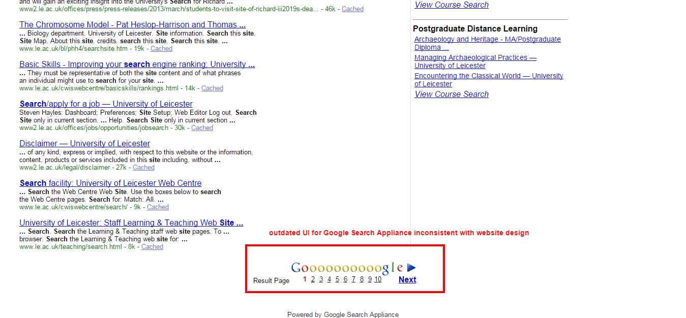
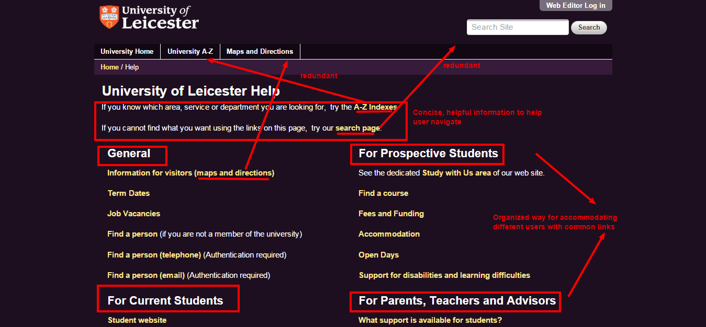

Help and documentation
Even though it is better if the system can be used without documentation, it may be necessary to provide help and documentation. Any such information should be easy to search, focused on the user's task, list concrete steps to be carried out, and not be too large.
Search{kind=link}
One of the ways the website helps users navigate through the website, is the search bar which is nicely located at the top right of the homepage obvious to the user. While the search engine is powered by Google, the UI is completely inconsistent and aesthetically displeasing to the user. Also, the Google search engine appears outdated from the current Google search interface.
Help{kind=link}
A successful way the website helps their users is through the help page that located in the footer. It is organized by different users and offers two different suggestions. It documents which links require authentication which would help prevent user errors as well. One downfall is that the help link is located in different locations and sometimes listed multiple times on several pages.
A-Z Lists{kind=link}
Generally, A-Z lists can be overwhelming to the user, especially when there are search options that take in direct input. The page provides A-Z searches for more specific indexes which would be more helpful to the user. While the complete A-Z list documents all possible search options for the user, a better option would be to narrow the search options through indexes such as the one shown on the right.